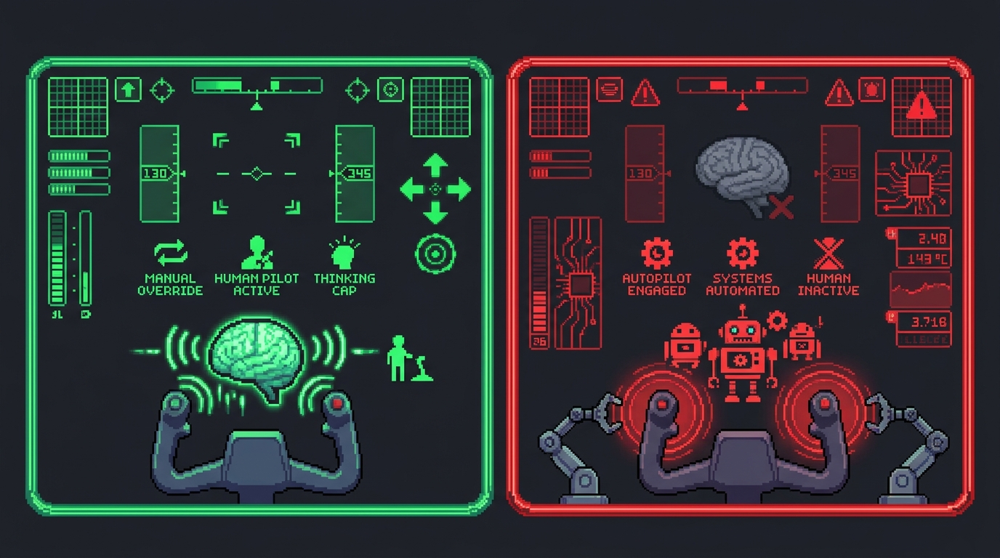

A Biologia do Esforço: O Custo Oculto de se apoiar na IA
A tecnologia avança em ritmo acelerado, mas os mecanismos biológicos do cérebro humano continuam os mesmos. Entenda o impacto real de substituir sua autonomia pelo piloto automático.
O áudio abaixo é um debate que aprofunda as ideias apresentadas nesta página e discute como o uso excessivo da IA pode afetar aprendizagem, memória, autonomia intelectual e desenvolvimento cognitivo. O áudio tem aproximadamente 20 minutos de duração, mas oferece reflexões importantes para quem deseja compreender melhor os benefícios e os riscos do uso da IA nos estudos.
70%
Dos estudantes usuários de internet utilizam sistemas de inteligência artificial generativa em suas pesquisas e entregas escolares regulares.
30%
Desses estudantes afirmam ter recebido algum tipo de orientação formal sobre como utilizar essas ferramentas de maneira crítica e ética.
Esse descompasso sinaliza a criação de uma nova brecha cognitivo-educacional. De acordo com as diretrizes de Computação na Educação Básica que complementam a BNCC, a Cultura Digital exige uma atitude crítica, responsável e fluida para propor soluções, e não apenas para copiar passivamente resultados automatizados.
Descarregamento Mental
O descarregamento mental (cognitive offloading) acontece quando delegamos uma função cerebral a um suporte externo. Pense no GPS: ele mostra a rota imediata, mas se você não presta atenção no caminho, nunca aprende a se localizar sozinho. Nos estudos ocorre o mesmo: delegar o trabalho braçal poupa tempo, mas transferir o processo essencial (analisar, relacionar e argumentar) deixa seu cérebro sem treino e impede a fixação da informação na memória de longo prazo. O áudio abaixo resume esse conceito.
Logo abaixo, você encontrará um episódio em formato de podcast. Não é obrigatório para continuar a navegação, mas recomendamos fortemente a escuta para compreender os fundamentos científicos apresentados nesta seção.
O Experimento de Dívida Cognitiva

O dilema do cockpit: você assume o controle como copiloto ou ativa o piloto automático? Neste áudio, o conceito de dívida cognitiva é explorado por meio de uma conversa simples e prática, mostrando como a terceirização frequente de tarefas mentais pode reduzir oportunidades de aprendizado, enfraquecer habilidades importantes e criar dependência de ferramentas externas. Com cerca de 23 minutos de duração, o conteúdo oferece uma reflexão valiosa para quem deseja utilizar a IA sem abrir mão da própria capacidade de pensar e aprender.
Queda na Conectividade Neural
Pesquisadores do MIT Media Lab monitoraram universitários via eletroencefalograma (qEEG) durante tarefas de escrita acadêmica. O uso puramente passivo de chatbots resultou em:
-47% nas conexões de redes de ondas Alpha (foco seletivo e atenção ativa).
-55% no acoplamento de oscilações Theta (processamento e retenção de memória).
O esforço poupado na entrega imediata acumula uma dívida cobrada mais tarde na sua capacidade de lembrar do próprio conteúdo.
A Visão Pedagógica e Filosófica
Aristóteles: A Musculação Cognitiva
Para o filósofo, o pensamento e a sabedoria prática não nascem prontos: transformam-se em hábito através do exercício diário. O esforço consciente é a nossa musculação cognitiva. Se você permite que a IA pense por você, seu raciocínio crítico não se desenvolve, assim como seus músculos não crescem se outra pessoa malhar no seu lugar.
Paulo Freire: Autonomia vs. Depósito
Freire criticava a educação bancária, onde o estudante é tratado como um cofre vazio feito para receber depósitos de respostas prontas. A IA não deve atuar como esse fornecedora automática de respostas. Para construir autonomia real, o sistema deve servir como parceiro de diálogo para você testar ideias e se manter como autor do conhecimento.
Para proteger seu cérebro desse descarregamento passivo, você precisa entender o truque por trás da tela. Como os algoritmos geram respostas?